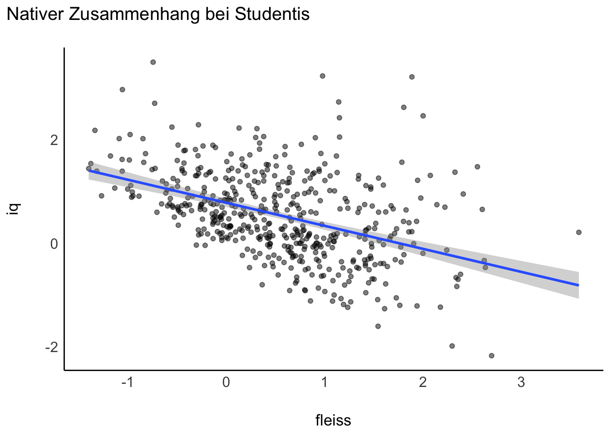
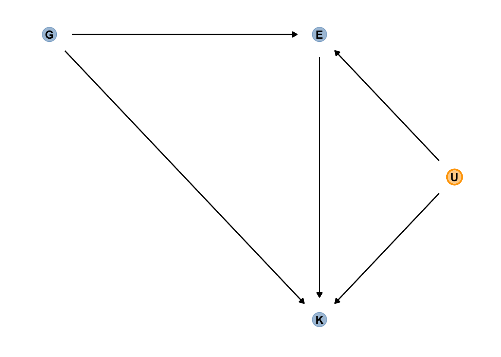
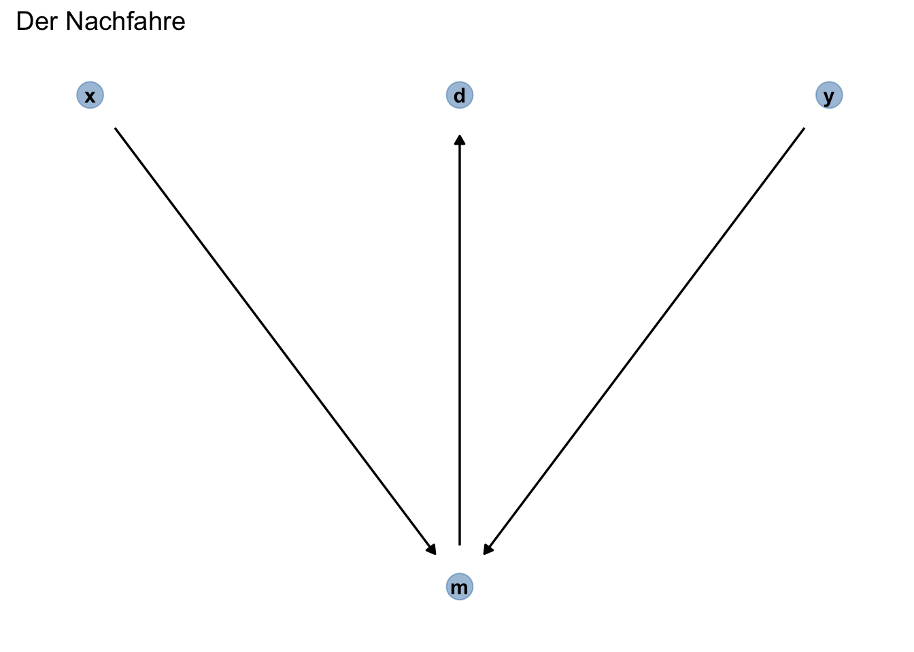

11 Kausalinferenz
Für dieses Kapitel benötigen Sie folgende R-Pakete:
11.1 Statistik, was soll ich tun?
11.1.1 Studie A: Östrogen
Was raten Sie dem Arzt? Medikament einnehmen, ja oder nein?
| Gruppe | Mit Medikament | Ohne Medikament |
|---|---|---|
| Männer | 81/87 überlebt (93%) | 234/270 überlebt (87%) |
| Frauen | 192/263 überlebt (73%) | 55/80 überlebt (69%) |
| Gesamt | 273/350 überlebt (78%) | 289/350 überlebt (83%) |
Die Daten stammen aus einer (fiktiven) klinischen Studie, \(n=700\), hoher Qualität (Beobachtungsstudie). Bei Männern scheint das Medikament zu helfen; bei Frauen auch. Aber insgesamt (Summe von Frauen und Männern) nicht?! Was sollen wir den Arzt raten? Soll er das Medikament verschreiben? Vielleicht nur dann, wenn er das Geschlecht kennt?
Pearl, Glymour, und Jewell (2016)
11.1.2 Kausalmodell zur Studie A
Das Geschlecht (Östrogen) hat einen Einfluss (+) auf Einnahme des Medikaments und auf Heilung (-). Das Medikament hat einen Einfluss (+) auf Heilung. Betrachtet man die Gesamt-Daten zur Heilung, so ist der Effekt von Geschlecht (Östrogen) und Medikament vermengt (konfundiert, confounded).

Betrachtung der Teildaten (d.h. stratifiziert pro Gruppe) zeigt in diesem Fall den wahren, kausalen Effekt. Stratifizieren ist also in diesem Fall der korrekte, richtige Weg.
Betrachtung der Gesamtdaten zeigt in diesem Fall einen konfundierten Effekt: Geschlecht konfundiert den Zusammenhang von Medikament und Heilung.
Achtung: Das Stratifizieren ist nicht immer und nicht automatisch die richtige Lösung:
11.1.3 Studie B: Blutdruck
Was raten Sie dem Arzt? Medikament einnehmen, ja oder nein?
| Gruppe | Ohne Medikament | Mit Medikament |
|---|---|---|
| geringer Blutdruck | 81/87 überlebt (93%) | 234/270 überlebt (87%) |
| hoher Blutdruck | 192/263 überlebt (73%) | 55/80 überlebt (69%) |
| Gesamt | 273/350 überlebt (78%) | 289/350 überlebt (83%) |
Die Daten stammen aus einer (fiktiven) klinischen Studie, \(n=700\), hoher Qualität (Beobachtungsstudie). Bei geringem Blutdruck scheint das Medikament zu schaden. Bei hohem Blutdrck scheint das Medikamenet auch zu schaden. Aber insgesamt (Summe über beide Gruppe) nicht, da scheint es zu nutzen?! Was sollen wir den Arzt raten? Soll er das Medikament verschreiben? Vielleicht nur dann, wenn er den Blutdruck nicht kennt???
Pearl, Glymour, und Jewell (2016)
11.1.4 Kausalmodell zur Studie B
Das Medikament hat einen (absenkenden) Einfluss auf den Blutdruck. Gleichzeitig hat das Medikament einen (toxischen) Effekt auf die Heilung. Verringerter Blutdruck hat einen positiven Einfluss auf die Heilung. Sucht man innerhalb der Leute mit gesenktem Blutdruck nach Effekten, findet man nur den toxischen Effekt: Gegeben diesen Blutdruck ist das Medikament schädlich aufgrund des toxischen Effekts. Der positive Effekt der Blutdruck-Senkung ist auf diese Art nicht zu sehen.

Betrachtung der Teildaten zeigt nur den toxischen Effekt des Medikaments, nicht den nützlichen (Reduktion des Blutdrucks).
Betrachtung der Gesamtdaten zeigt in diesem Fall den wahren, kausalen Effekt. Stratifizieren wäre falsch, da dann nur der toxische Effekt, aber nicht der heilsame Effekt sichtbar wäre.
11.1.5 Studie A und B: Gleiche Daten, unterschiedliches Kausalmodell
Studie A
Studie B

Kausale Interpretation - und damit Entscheidungen für Handlungen - war nur möglich, wenn das Kausalmodell bekannt ist. Die Daten alleine reichen nicht.
11.1.6 Sorry, Statistik: Du allein schaffst es nicht
Statistik alleine reicht nicht für Kausalschlüsse 🧟
Statistik plus Theorie erlaubt Kausalschlüsse 📚+📊=🤩
Für Entscheidungen (“Was soll ich tun?”) braucht man kausales Wissen. Kausales Wissen basiert auf einer Theorie (Kausalmodell) plus Daten.
11.1.7 Studie C: Nierensteine
Nehmen wir an, es gibt zwei Behandlungsvarianten bei Nierensteinen, Behandlung A und B. Ärzte tendieren zu Behandlung A bei großen Steinen (die einen schwereren Verlauf haben); bei kleineren Steinen tendieren die Ärzte zu Behandlung B.
Sollte ein Patient, der nicht weiß, ob sein Nierenstein groß oder klein ist, die Wirksamkeit in der Gesamtpopulation (Gesamtdaten) oder in den stratifizierten Daten (Teildaten nach Steingröße) betrachten, um zu entscheiden, welche Behandlungsvariante er (oder sie) wählt?
11.1.8 Kausalmodell zur Studie C
Die Größe der Nierensteine hat einen Einfluss auf die Behandlungsmethode. Die Behandlung hat eien Einfluss auf die Heilung. Damit gibt es eine Mediation von Größe -> Behandlung -> Heilung. Darüberhinaus gibt es noch einen Einfluss von Größe der Nierensteine auf die Heilung.

11.1.9 Mehr Beispiele
Studien zeigen, dass Einkommen und Heiraten (bzw. verheiratete sein) hoch korrelieren. Daher wird sich dein Einkommen erhöhen, wenn du heiratest.
Studien zeigen, dass Leute, die sich beeilen, zu spät zu ihrer Besprechung kommen. Daher lieber nicht beeilen, oder du kommst zu spät zu deiner Besprechung.
11.2 Konfundierung
\(\newcommand{\indep}{\perp \!\!\! \perp}\)
11.2.1 Datensatz ‘Hauspreise im Saratoga County’
Datenquelle; Beschreibung des Datensatzes
Code
d_path <- "https://vincentarelbundock.github.io/Rdatasets/csv/mosaicData/SaratogaHouses.csv"11.2.2 Immobilienpreise in einer schicken Wohngegend vorhersagen
Finden Sie den Wert meiner Immobilie heraus!
Die muss viel wert sein!”
🧑 Das ist Don, Immobilienmogul, Auftraggeber.
Das finde ich heraus. Ich mach das wissenschaftlich. 👩 🔬
Das ist Angie, Data Scientistin.
11.2.3 Modell 1: Preis als Funktion der Anzahl der Zimmer
“Hey Don! Mehr Zimmer, mehr Kohle!” 👩 🔬

11.2.4 Posteriori-Verteilung von Modell 1
“Jedes Zimmer mehr ist knapp 50 Tausend wert. Dein Haus hat einen Wert von etwa 150 Tausend.”
👩
Zu wenig! 🤬
🧑
Berechnen wir das Modell:
Code
m1 <- stan_glm(price ~ bedrooms,
refresh = 0,
data = d)
hdi(m1)| Parameter | CI | CI_low | CI_high | Effects | Component |
|---|---|---|---|---|---|
| (Intercept) | 0.95 | 43489.39 | 76643.17 | fixed | conditional |
| bedrooms | 0.95 | 43052.12 | 53152.00 | fixed | conditional |
Mit estimate_preditioncs können wir Vorhersagen berechnen (bzw. schätzen; die Vorhersagen sind ja mit Ungewissheit verbunden, daher ist “schätzen” vielleicht das treffendere Wort):
Code
dons_house <- tibble(bedrooms = 2)
estimate_prediction(m1, data = dons_house)| bedrooms | Predicted | SE | CI_low | CI_high |
|---|---|---|---|---|
| 2 | 159296.3 | 92429.25 | -22647.23 | 328883.1 |
11.2.5 Don hat eine Idee
“Ich bau eine Mauer! Genial! An die Arbeit, Angie!
🧑
Don hofft, durch Verdopplung der Zimmerzahl den doppelten Verkaufspreis zu erzielen. Ob das klappt?
Das ist keine gute Idee, Don.”
👩
Berechnen wir die Vorhersagen für Dons neues Haus (mit den durch Mauern halbierten Zimmern).
Code
dons_new_house <- tibble(bedrooms = 4)
estimate_prediction(m1, dons_new_house)| bedrooms | Predicted | SE | CI_low | CI_high |
|---|---|---|---|---|
| 4 | 253070 | 88114.07 | 82827.13 | 429410.9 |
Mit 4 statt 2 Schlafzimmer steigt der Wert auf 250k, laut m1.
Volltreffer! Jetzt verdien ich 100 Tausend mehr! 🤑 Ich bin der Größte! 🧑
Zur Erinnerung: “4e+05” ist die Kurzform der wissenschaftlichen Schreibweise und bedeutet: \(4 \cdot 100000 = 4\cdot10^5 = 400000\)
11.2.6 R-Funktionen, um Beobachtungen vorhersagen
estimate_prediction(m1, dons_new_house) erstellt Vorhersageintervalle, berücksichtigt also zwei Quellen von Ungewissheit:
- Ungewissheiten in den Parametern (Modellkoeffizienten, \(\beta_0, \beta_1, ...\))
- Ungewissheit im “Strukturmodell”: Wenn also z.B. in unserem Modell ein wichtiger Prädiktor fehlt, so kann die Vorhersagen nicht präzise sein. Fehler im Strukturmodell schlagen sich in breiten Schätzintervallen (bedingt durch ein großes \(\sigma\)) nieder.
estimate_expectation(m1, dons_new_house) erstellt Konfidenzintervalle. berücksichtigt also nur eine Quelle von Ungewissheit:
- Ungewissheiten in den Parametern (Modellkoeffizienten, \(\beta_0, \beta_1, ...\))
Die Schätzbereiche sind in dem Fall deutlich kleiner:
Code
estimate_expectation(m1, dons_new_house)| bedrooms | Predicted | SE | CI_low | CI_high |
|---|---|---|---|---|
| 4 | 252742.5 | 3035.48 | 246625.4 | 258772.9 |
11.2.7 Modell 2: price ~ bedrooms + livingArea
Berechnen wir das Modell m2: price ~ bedrooms + livingArea.
Code
m2 <- stan_glm(price ~ bedrooms + livingArea, data = d, refresh = 0)
hdi(m2)| Parameter | CI | CI_low | CI_high | Effects | Component |
|---|---|---|---|---|---|
| (Intercept) | 0.95 | 24068.183 | 49329.9645 | fixed | conditional |
| bedrooms | 0.95 | -19612.659 | -9138.2132 | fixed | conditional |
| livingArea | 0.95 | 118.563 | 132.2664 | fixed | conditional |
Was sind die Vorhersgaen des Modell?
Code
estimate_prediction(m2, data = tibble(bedrooms = 4, livingArea = 1200))| bedrooms | livingArea | Predicted | SE | CI_low | CI_high |
|---|---|---|---|---|---|
| 4 | 1200 | 129359.9 | 69683.43 | -4753.555 | 263092 |
Andere, aber ähnliche Frage: Wieviel Haus kostet ein Haus mit sagen wir 4 Zimmer gemittelt über die verschiedenen Größen von livingArea? Stellen Sie sich alle Häuser mit 4 Zimmern vor (also mit verschiedenen Wohnflächen). Wir möchten nur wissen, was so ein Haus “im Mittel” kostet. Wir möchten also die Mittelwerte pro bedroom schätzen, gemittelt für jeden Wert von bedroom über livingArea:
Code
estimate_means(m2, at = "bedrooms", length = 7)| bedrooms | Mean | CI_low | CI_high |
|---|---|---|---|
| 1 | 242754.2 | 230779.7 | 254092.1 |
| 2 | 228456.7 | 221510.8 | 234998.5 |
| 3 | 214147.1 | 210871.3 | 217455.7 |
| 4 | 199857.8 | 194341.9 | 205547.6 |
| 5 | 185504.2 | 175665.5 | 196340.1 |
| 6 | 171171.6 | 156561.6 | 187345.2 |
| 7 | 156883.0 | 137189.5 | 178571.8 |
“Die Zimmer zu halbieren, hat den Wert des Hauses verringert, Don!”
👩
“Verringert!? Weniger Geld?! Oh nein!” 🧑
11.2.8 Die Zimmerzahl ist negativ mit dem Preis korreliert
… wenn man die Wohnfläche (Quadratmeter) kontrolliert.
“Ne-Ga-Tiv!”
👩
{kind=link}
11.3 Kontrollieren von Variablen
💡 Durch das Aufnehmen von Prädiktoren in die multiple Regression werden die Prädiktoren kontrolliert (adjustiert, konditioniert):
Die Koeffizienten einer multiplen Regression zeigen den Zusammenhang \(\beta\) des einen Prädiktors mit \(y\), wenn man den (oder die) anderen Prädiktoren statistisch konstant hält.
Man nennt die Koeffizienten einer multiplen Regression daher auch parzielle Regressionskoeffizienten. Manchmal spricht man, eher umgangssprachlich, auch vom “Netto-Effekt” eines Prädiktors, oder davon, dass ein Prädiktor “bereinigt” wurde vom (linearen) Einfluss der anderen Prädiktoren auf \(y\).
Damit kann man die Regressionskoeffizienten so interpretieren, dass Sie den Effekt des Prädiktors \(x_1\) auf \(y\) anzeigen unabhängig vom Effekt der anderen Prädiktoren, \(x_2,x_3,...\) auf \(y\)
Man kann sich dieses Konstanthalten vorstellen als eine Aufteilung in Gruppen: Der Effekt eines Prädiktors \(x_1\) wird für jede Ausprägung (Gruppe) des Prädiktors \(x_2\) berechnet.
11.3.1 Das Hinzufügen von Prädiktoren kann die Gewichte der übrigen Prädiktoren ändern
Aber welche und wie viele Prädiktoren soll ich denn jetzt in mein Modell aufnehmen?! Und welches Modell ist jetzt richtig?!
🧑
Leider kann die Statistik keine Antwort darauf geben.
👩
Wozu ist sie dann gut?!
🧑
In Beobachtungsstudien hilft nur ein (korrektes) Kausalmodell. Ohne Kausalmodell ist es nutzlos, die Regressionskoeffizienten (oder eine andere Statistik) zur Erklärung der Ursachen heranzuziehen.
11.4 Welches Modell richtig ist, kann die Statistik nicht sagen
Often people want statistical modeling to do things that statical modeling cannot do. For example, we’d like to know wheter an effect is “real” or rather spurios. Unfortunately, modeling merely quantifies uncertainty in the precise way that the model understands the problem. Usually answers to lage world questions about truth and causation depend upon information not included in the model. For example, any observed correlation between an outcome and predictor could be eliminated or reversed once another predictor is added to the model. But if we cannot think of the right variable, we might never notice. Therefore all statical models are vulnerable to and demand critique, regardless of the precision of their estimates and apparaent accuracy of their predictions. Rounds of model criticism and revision embody the real tests of scientific hypotheses. A true hypothesis will pass and fail many statistical “tests” on its way to acceptance.
McElreath (2020), S. 139
11.4.1 Kausalmodell für Konfundierung, km1

Wenn dieses Kausalmodell stimmt, findet man eine Scheinkorrelation zwischen price und bedrooms.
Eine Scheinkorrelation ist ein Zusammenhang, der nicht auf eine kausalen Einfluss beruht.
d_connected heißt, dass die betreffenden Variablen “verbunden” sind durch einen gerichteten (d wie directed) Pfad, durch den die Assoziation (Korrelation) wie durch einen Fluss fließt 🌊. d_separated heißt, dass sie nicht d_connected sind.
11.4.2 m2 kontrolliert die Konfundierungsvariable livingArea
Wenn das Kausalmodell stimmt, dann zeigt m2 den kausalen Effekt von livingArea.
Was tun wir jetzt bloß?! Oh jeh!
🧑
Wir müssen die Konfundierungsvariable kontrollieren.
👩

Durch das Kontrollieren (“adjustieren”), sind bedrooms und price nicht mehr korreliert, nicht mehr d_connected, sondern jetzt d_separeted.
11.4.3 Konfundierer kontrollieren
- Ohne Kontrollieren der Konfundierungsvariablen
Regressionsmodell: y ~ x

Es wird (fälschlich) eine Korrelation zwischen x und y angezeigt: Scheinkorrelation.
M2. it Kontrollieren der Konfundierungsvariablen
Regressionsmodell: y ~ x + group

Es wird korrekt gezeigt, dass es keine Korrelation zwischen x und y gibt, wenn group kontrolliert wird.
11.4.4 m1 und m2 passen nicht zu den Daten, wenn km1 stimmt

Laut km1 dürfte es keine Assoziation (Korrelation) zwischen bedrooms und price geben, wenn man livingArea kontrolliert. Es gibt aber noch eine Assoziation zwischen bedrooms und price geben, wenn man livingArea kontrolliert. Daher sind sowohl m1 und m2 nicht mit dem Kausalmodell km1 vereinbar.
11.4.5 Kausalmodell 2, km2
Unser Modell m2 sagt uns, dass beide Prädiktoren jeweils einen eigenen Beitrag zur Erklärung der AV haben.
Daher könnte das folgende Kausalmodell, km2 besser passen.
In diesem Modell gibt es eine Wirkkette: \(a \rightarrow b \rightarrow p\).
Insgesamt gibt es zwei Kausaleinflüsse von a auf p: - \(a \rightarrow p\) - \(a \rightarrow b \rightarrow p\)
Man nennt die mittlere Variable einer Wirkkette auch einen Mediator und den Pfad von der UV (a) über den Mediator (b) zur AV (p) auch Mediation.
11.4.6 Schoki macht Nobelpreis! (?)
Eine Studie fand eine starke Korrelation, \(r=0.79\) zwischen (Höhe des) Schokoladenkonsums eines Landes und (Anzahl der) Nobelpreise eines Landes (Messerli 2012).

💣 Korrelation ungleich Kausation!
11.4.7 Kausalmodell für die Schoki-Studie

11.4.8 Dons Kausalmodell, km3

Ich glaube aber an mein Kausalmodell. Mein Kausalmodell ist das größte! Alle anderen Kausalmodelle sind ein Disaster!”
🧑
“Don, nach deinem Kausalmodell müssten
bedroomsundlivingAreaunkorreliert sein. Sind sie aber nicht.”
Rechne doch selber, die Korrelation aus, Don:
Code
d %>%
summarise(cor(bedrooms, livingArea))| cor(bedrooms, livingArea) |
|---|
| 0.6561957 |
👩
11.4.9 Unabhängigkeiten laut km1
b: bedrooms, p: price, a area (living area)

\(b \indep p \, |\, a\): bedrooms sind unabhängig von price, wenn man livingArea kontrolliert.
⛈️ Passt nicht zu den Daten/zum Modell!
11.4.10 Unabhängigkeiten laut km2
b: bedrooms, p: price, a area (living area)

keine Unabhängigkeiten
❓ Passt zu den Daten/zum Modell
11.4.11 Unabhängigkeiten laut km3
b: bedrooms, p: price, a area (living area)

\(b \indep a\): bedrooms sind unabhängig von livingArea (a)
⛈️ Passt nicht zu den Daten/zum Modell!
11.5 DAGs: Directed Acyclic Graphs
Was sind DAGs?
DAGs sind eine bestimmte Art von Graphen zur Analyse von Kausalstrukturen.
Ein Graph besteht aus Knoten (Variablen) und Kanten (Linien), die die Knoten verbinden.
DAGs sind gerichtet; die Pfeile zeigen immer in eine Richtung (und zwar von Ursache zu Wirkung).
DAGs sind azyklisch; die Wirkung eines Knoten darf nicht wieder auf ihn zurückführen.
Ein Pfad ist ein Weg durch den DAG, von Knoten zu Knoten über die Kanten, unabhängig von der Pfeilrichtung.
11.5.1 DAG von km1

11.5.2 Leider passen potenziell viele DAGs zu einer Datenlage
b: bedrooms, p: price, a area (living area)

11.5.3 Was ist eigentlich eine Ursache?
Etwas verursachen kann man auch (ziemlich hochtrabend) als “Kausation” verwenden.
Weiß man, was die Wirkung \(W\) einer Handlung \(H\) (Intervention) ist, so hat man \(H\) als Ursache von \(W\) erkannt.
McElreath (2020)

11.5.4 Fazit
Sind zwei Variablen korreliert (abhängig, assoziiert), so kann es dafür zwei Gründe geben:
- Kausaler Zusammenhang
- Nichtkausaler Zusammenhang (“Scheinkorrelation”)
Eine mögliche Ursache einer Scheinkorrelation ist Konfundierung.
Konfundierung kann man entdecken, indem man die angenommene Konfundierungsvariable kontrolliert (adjustiert), z.B. indem man ihn als Prädiktor in eine Regression aufnimmt.
Ist die Annahme einer Konfundierung korrekt, so löst sich der Scheinzusammenhang nach dem Adjustieren auf.
Löst sich der Scheinzusammenhang nicht auf, sondern drehen sich die Vorzeichen der Zusammenhänge nach Adjustieren um, so spricht man einem Simpson Paradox.
Die Daten alleine können nie sagen, welches Kausalmodell der Fall ist in einer Beobachtungsstudie. Fachwissen (inhaltliches wissenschaftliches Wissen) ist nötig, um DAGs auszuschließen.
11.6 Kollision
11.6.1 Kein Zusammenhang von Intelligenz und Schönheit (?)

11.6.2 Aber Ihre Dates sind entweder schlau oder schön
Seltsamerweise beobachten Sie, dass die Menschen, die Sie daten (Ihre Dates), entweder schön sind oder schlau - aber seltens beides gleichzeitig (schade).
Wie kann das sein?
11.7 DAG zur Rettung
🦹 🦸
Dieser DAG bietet eine rettende Erklärung:


11.7.1 Was ist eine Kollision?
Als Kollision (Kollisionsverzerrung, Auswahlverzerrung, engl. collider) bezeichnet man einen DAG, bei dem eine Wirkung zwei Ursachen hat (eine gemeinsame Wirkung zweier Ursachen). Kontrolliert man die Wirkung m, so entsteht eine Scheinkorrelation zwischen den Ursachen x und y. Kontrolliert man die Wirkung nicht, so entsteht keine Scheinkorrelation zwischen den Ursachen.

Rohrer (2018)
Man kann also zu viele oder falsche Prädiktoren einer Regression hinzufügen, so dass die Koeffizienten nicht die kausalen Effekte zeigen, sondern durch Scheinkorrelation verzerrte Werte.
11.7.2 Einfaches Beispiel zur Kollision
In der Zeitung Glitzer werden nur folgende Menschen gezeigt:
- Schöne Menschen
- Reiche Menschen
ehen wir davon aus, dass Schönheit und Reichtum unabhängig voneinander sind.
Wenn ich Ihnen sage, dass Don nicht schön ist, aber in der Glitzer häufig auftaucht, was lernen wir dann über seine finanzielle Situation?1
“Ich bin schön, unglaublich schön, und groß, großartig, tolle Gene!!!” 🧑
11.7.3 Noch ein einfaches Beispiel zur Kollision
“So langsam check ich’s!”
Sei Z = X + Y, wobei X und Y unabhängig sind.
Wenn ich Ihnen sage, X = 3, lernen Sie nichts über Y, da die beiden Variablen unabhängig sind Aber: Wenn ich Ihnen zuerst sage, Z = 10, und dann sage, X = 3, wissen Sie sofort, was Y ist (Y = 7).
Also: X und Y sind abhängig – gegeben Z: \(X \notindep Y \,|\, Z\).
11.7.4 Durch Kontrolle entsteht eine Verzerrung bei der Kollision

Ohne Kontrolle von
dateentsteht keine Scheinkorrelation zwischenLooksundTalent. Der Pfad (“Fluss”) vonLooksüberdatenachTalentist blockiert.Kontrolliert man
date, so öffnet sich der PfadLooks->date->Talentund die Scheinkorrelation entsteht: Der Pfad ist nicht mehr blockiert.Das Kontrollieren von
dategeht zumeist durch Bilden einer Auswahl einer Teilgruppe von sich.
11.7.5 IQ, Fleiss und Eignung fürs Studium
Bei positiver eignung wird ein Studium aufgenommen (studium = 1) ansonsten nicht (studium = 0).
eignung (fürs Studium) sei definiert als die Summe von iq und fleiss, plus etwas Glück:
Code
set.seed(42) # Reproduzierbarkeit
N <- 1e03
d_eignung <-
tibble(
iq = rnorm(N), # normalverteilt mit MW=0, sd=1
fleiss = rnorm(N),
glueck = rnorm(N, mean = 0, sd = .1),
eignung = 1/2 * iq + 1/2 * fleiss + glueck,
studium = ifelse(eignung > 0, 1, 0) # nur wer geeignet ist, studiert (in unserem Modell)
)Laut unserem Modell setzt sich Eignung zur Hälfte aus Intelligenz und zur Hälfte aus Fleiss zusammen, plus etwas Glück.
11.7.6 Schlagzeile “Schlauheit macht Studentis faul!”
Eine Studie untersucht den Zusammenhang von Intelligenz (iq) und Fleiß (f) bei Studentis (s).
Ergebnis: Ein negativer Zusammenhang.
Berechnen wir das “Eignungsmodell”, aber nur mit Studis:
Code
m_eignung <-
stan_glm(iq ~ fleiss, data = d_eignung %>% filter(studium == 1), refresh = 0)
hdi(m_eignung)| Parameter | CI | CI_low | CI_high | Effects | Component |
|---|---|---|---|---|---|
| (Intercept) | 0.95 | 0.7004608 | 0.8596029 | fixed | conditional |
| fleiss | 0.95 | -0.5266816 | -0.3634545 | fixed | conditional |

IQ ist nicht unabhängig von Fleiß in unseren Daten.
11.7.7 Kollisionsverzerrung nur bei Stratifizierung
Nur durch das Stratifizieren (Aufteilen in Subgruppen, Kontrollieren, Adjustieren) tritt die Scheinkorrelation auf.
Ohne Stratifizierung tritt keine Scheinkorrelation auf

Mit Stratifizierung tritt Scheinkorrelation auf

Wildes Kontrollieren einer Variablen - Aufnehmen in die Regression - kann genausogut schaden wie nützen.
Nur Kenntnis des DAGs verrät die richtige Entscheidung: ob man eine Variable kontrolliert oder nicht.
Nimmt man eine Variable als zweiten Prädiktor auf, so “kontrolliert” man diese Variable. Das Regressiongewicht des ersten Prädiktors wird “bereinigt” um den Einfluss des zweiten Prädiktors; insofern ist der zweite Prädiktor dann “kontrolliert”.
11.7.8 Einfluss von Großeltern und Eltern auf Kinder
Wir wollen hier den (kausalen) Einfluss der Eltern E und Großeltern G auf den Bildungserfolg der Kinder K untersuchen.
Wir nehmen folgende Effekte an:
- indirekter Effekt von
GaufK: \(G \rightarrow E \rightarrow K\) - direkter Effekt von
EaufK: \(E \rightarrow K\) - direkter Effekt von
GaufK: \(G \rightarrow K\)
Wir sind v.a. interessiert an \(G \rightarrow K\), dem direkten kausalen Effekt von Großeltern auf ihre Enkel.

Aber was ist, wenn wir vielleicht eine unbekannte Variable übersehen haben? (S. nächste Seite 👻)
11.8 Vertiefung
🏎️VERTIEFUNG🏎️
11.8.1 Der Gespenster-DAG
👻

Ukönnte ein ungemessener Einfluss sein, der aufEundKwirkt, etwa Nachbarschaft.Die Großeltern wohnen woanders (in Spanien), daher wirkt die Nachbarschaft der Eltern und Kinder nicht auf sie.
Eist sowohl fürGals auch fürUeine Wirkung, also eine Kollisionsvariable auf diesem Pfad.Wenn wir
Ekontrollieren, wird es den Pfad \(G \rightarrow K\) verzerren, auch wenn wir niemalsUmessen.
Die Sache ist chancenlos. Wir müssen den DAG verloren geben. 👻
McElreath (2020), S. 180
11.9 Die Hintertür schließen
11.9.1 Zur Erinnerung: Konfundierung
Forschungsfrage: Wie groß ist der (kausale) Einfluss der Schlafzimmerzahl auf den Verkaufspreis des Hauses?
a: livingArea, b: bedrooms, p: prize
UV: b, AV: p

Im Regressionsmodell p ~ b wird der kausale Effekt verzerrt sein durch die Konfundierung mit a. Der Grund für die Konfundierung sind die zwei Pfade zwischen b und p:
- \(b \rightarrow p\)
- \(b \rightarrow a \rightarrow p\)
Beide Pfade erzeugen (statistische) Assoziation zwischen b und p. Aber nur der erste Pfad ist kausal; der zweite ist nichtkausal. Gäbe es nur nur den zweiten Pfad und wir würden b ändern, so würde sich p nicht ändern.
11.9.2 Gute Experimente zeigen den echten kausalen Effekt

Die “Hintertür” der UV (b) ist jetzt zu! Der einzig verbleibende, erste Pfad ist der kausale Pfad und die Assoziation zwischen b und p ist jetzt komplett kausal.
- Eine berühmte Lösung, den kausalen Pfad zu isolieren, ist ein (randomsiertes, kontrolliertes) Experiment.
- Wenn wir den Häusern zufällig (randomisiert) eine Anzahl von Schlafzimmern (
b) zuweisen könnten (unabhängig von ihrer Quadratmeterzahl,a), würde sich der Graph so ändern. - Das Experiment entfernt den Einfluss von
aaufb. - Wenn wir selber die Werte von
beinstellen im Rahmen des Experiments, so kannakeine Wirkung aufbhaben. - Damit wird der zweite Pfad, \(b \rightarrow a \rightarrow p\) geschlossen (“blockiert”).
11.9.3 Hintertür schließen auch ohne Experimente
Konfundierende Pfade zu blockieren zwischen der UV und der AV nennt man auch die Hintertür schließen (backdoor criterion).
Wir wollen die Hintertüre schließen, da wir sonst nicht den wahren, kausalen Effekt bestimmen können.
Zum Glück gibt es neben Experimenten noch andere Wege, die Hintertür zu schließen, wie die Konfundierungsvariable
ain eine Regression mit aufzunehmen.Warum blockt das Kontrollieren von
aden Pfad \(b \leftarrow a \rightarrow p\)?Stellen Sie sich den Pfad als eigenen Modell vor.
Sobald Sie
akennen, bringt Ihnen Kenntnis überbkein zusätzliches Wissen überp.Wissen Sie hingegen nichts über
a, lernen Sie bei Kenntnis vonbauch etwas überp.Konditionieren ist wie “gegeben, dass Sie
aschon kennen…”.\(b \indep p \,|\,a\)
11.9.4 Die vier Atome der Kausalanalyse

11.9.5 Mediation

Die Mediation (Wirkkette, Rohr, Kette, chain) beschreibt Pfade, in der die Kanten gleiche Wirkrichtung haben: \(x \rightarrow m \rightarrow y\).
- Ohne Kontrollieren ist der Pfad offen: Die Assoziation “fließt” den Pfad entlang (in beide Richtungen).
- Kontrollieren blockt (schließt) die Kette (genau wie bei der Gabel).
11.10 Der Nachfahre

Ein Nachfahre (descendent) ist eine Variable die von einer anderen Variable beeinflusst wird. Kontrolliert man einen Nachfahren d, so kontrolliert man damit zum Teil den Vorfahren (die Ursache), m. Der Grund ist, dass d Information beinhaltet über m. Hier wird das Kontrollieren von d den Pfad von x nach y teilweise öffnen, da m eine Kollisionsvariable ist.
11.10.1 Kochrezept zur Analyse von DAGs
Wie kompliziert ein DAG auch aussehen mag, er ist immer aus diesen vier Atomen aufgebaut.
Hier ist ein Rezept, das garantiert, dass Sie welche Variablen Sie kontrollieren sollten und welche nicht:
- Listen Sie alle Pfade von UV (
X) zu AV (Y) auf. - Beurteilen Sie jeden Pfad, ob er gerade geschlossen oder geöffnet ist.
- Beurteilen Sie für jeden Pfad, ob er ein Hintertürpfad ist (Hintertürpfade haben einen Pfeil, der zur UV führt).
- Wenn es geöffnete Hinterpfade gibt, prüfen Sie, welche Variablen mann kontrollieren muss, um den Pfad zu schließen (falls möglich).
11.11 Schließen Sie die Hintertür (wenn möglich)!, bsp1
UV: \(X\), AV: \(Y\), drei Covariaten (A, B, C) und ein ungemessene Variable, U

Es gibt zwei Hintertürpfade:
- \(X \leftarrow U \leftarrow A \rightarrow C \rightarrow Y\), offen
- \(X \leftarrow U \rightarrow B \leftarrow C \rightarrow Y\), geschlossen
Kontrollieren von \(A\) oder (auch) \(C\) schließt die offene Hintertür.
McElreath (2020), Kurz (2021), s.S. 186.
11.11.1 Schließen Sie die Hintertür (wenn möglich)!, bsp2
UV: \(W\), AV: \(D\)
Kontrollieren Sie diese Variablen, um die offenen Hintertüren zu schließen:
- entweder \(A\) und \(M\)
- oder \(S\)
11.11.2 Implizierte bedingte Unabhängigkeiten von bsp2
Ein Graph ohne Us ist eine starke - oft zu starke (unrealistisch optimistische) - Annahme. Auch wenn die Daten nicht sagen können, welcher DAG der richtige ist, können wir zumindest lernen, welcher DAG falsch ist. Die vom Modell implizierten bedingten Unabhängigkeiten geben uns Möglichkeiten, zu prüfen, ob wir einen DAG verwerfen (ausschließen) können. Bedingten Unabhängigkeit zwischen zwei Variablen sind Variablen, die nicht assoziiert (also stochastisch unabhängig) sind, wenn wir eine bestimmte Menge an Drittvariablen kontrollieren.
bsp2 impliziert folgende bedingte Unabhängigkeiten:
## A _||_ W | S
## D _||_ S | A, M, W
## M _||_ W | S11.11.3 Fazit
Wie (und sogar ob) Sie statistische Ergebnisse (z.B. eines Regressionsmodells) interpretieren können, hängt von der epistemologischen Zielrichting der Forschungsfrage ab:
- Bei deskriptiven Forschungsfragen können die Ergebnisse (z.B. Regressionskoeffizienten) direkt interpretiert werden. Z.B. “Der Unterschied zwischen beiden Gruppen beträgt etwa …”. Allerdings ist eine kausale Interpretation nicht zulässig.
- Bei prognostischen Fragestellungen spielen die Modellkoeffizienten keine Rolle, stattdessen geht es um vorhergesagten Werte, \(\hat{y}_i\), z.B. auf Basis der PPV. Kausalaussagen sind zwar nicht möglich, aber auch nicht von Interesse.
- Bei kausalen Forschungsfragen dürfen die Modellkoeffizienten nur auf Basis eines Kausalmodells (DAG) oder eines (gut gemachten) Experiments interpretiert werden.
Modellkoeffizienten ändern sich (oft), wenn man Prädiktoren zum Modell hinzufügt oder wegnimmt. Entgegen der verbreiteten Annahme ist es falsch, möglichst viele Prädiktoren in das Modell aufzunehmen, wenn das Ziel eine Kausalaussage ist. Kenntnis der “kausalen Atome” ist Voraussetzung zur Ableitung von Kausalschlüsse in Beobachtungsstudien.
Don muss reich sein.↩︎